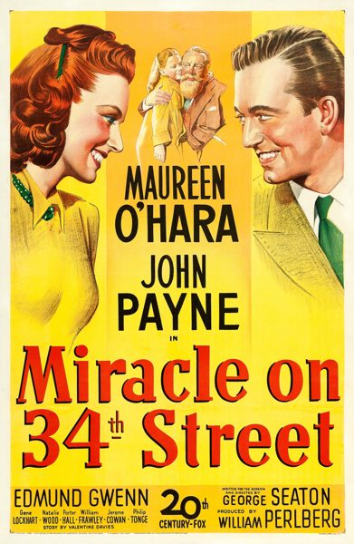

Miracle on 34th Street
Starring: Maureen O'Hara, John Payne, Natalie Wood
Director: George Seaton
Writer: George Seaton
Producer: William Perlberg
Miracle on 34th Street (initially released as The Big Heart in the United Kingdom) is a 1947 American Christmas comedy-drama film released by 20th Century-Fox, written and directed by George Seaton and based on a story by Valentine Davies. It stars Maureen O'Hara, John Payne, Natalie Wood, and Edmund Gwenn.
Trivia
- Won the Academy Award for Best Supporting Actor.
- Won the Academy Award for Best Story.
- Won the Academy Award for Best Writing, Adapted Screenplay.
- Also nominated for: Academy Award for Best Picture.
- Throughout the process of getting this script accepted by the PCA, the movie underwent multiple title changes, starting as My Heart Tells Me and then progressing into The Big Heart, It's Only Human, and Meet Me at Dawn, and finally ending with the name Miracle on 34th Street.
- O'Hara was initially reluctant to take the role, having recently moved back to post-war Ireland.
- Payne was on suspension at the studio and took the role to get back into work.
Filming Locations
- New York City
- Miracle on 34th Street was shot on location in New York City, with the Macy's Thanksgiving Day Parade sequences filmed live while the 1946 parade was happening.
- "It was bitterly cold that day, and Edmund and I envied Natalie (Wood) and John Payne, who were watching the parade from a window." Arthur Jacobson, assistant director, filmed the Macy's Parade on Thanksgiving morning with nine cameras simultaneously.
Previous Showings
15 Runs • 11 Festivals
Original Billings: 1 run (July 13, 1947)
Original Run: July 13, 1947 (Sunday - Thursday)
All runs on record (15):
- July 13, 1947 (Sunday - Thursday)Maureen O'Hara, John Payne
- December 22 - 23, 1990w/ Sitting Pretty
- December 21 - 23, 1991
- December 11 - 23, 1998Romantic Comedy Seriesw/ The Shop Around the Corner
- August 21 - 24, 1999Summer 1999w/ The Wizard of Oz
- December 20 - 23, 2002Fall Folliesw/ The Shop Around the Corner
- December 17 - 23, 2004Marlon Brando: His First Decade in Films, plus Nine Musicals with Fred Astaire aw/ The Shop Around the Corner
- December 19 - 23, 2005Fall 2005w/ The Shop Around the Corner
- December 18 - 20, 200620th Century-Fox Film Festivalw/ White Christmas
- December 20 - 23, 200920th Anniversary Festivalw/ The Shop Around the Corner
- December 12 - 14, 2014November–December 2014, plus The Ten Commandmentsw/ Apartment for Peggy
- December 14 - 16, 2018Laurel & Hardy, plus Christmas filmsw/ The Bishop's Wife
- December 16 - 17, 2023Holiday Favorites plus Deanna Durbinw/ Meet Me in St. Louis
- December 6 - 8, 2024December 2024w/ Mary Poppins
- December 20 - 22, 2024December 2024w/ The Shop Around the Corner